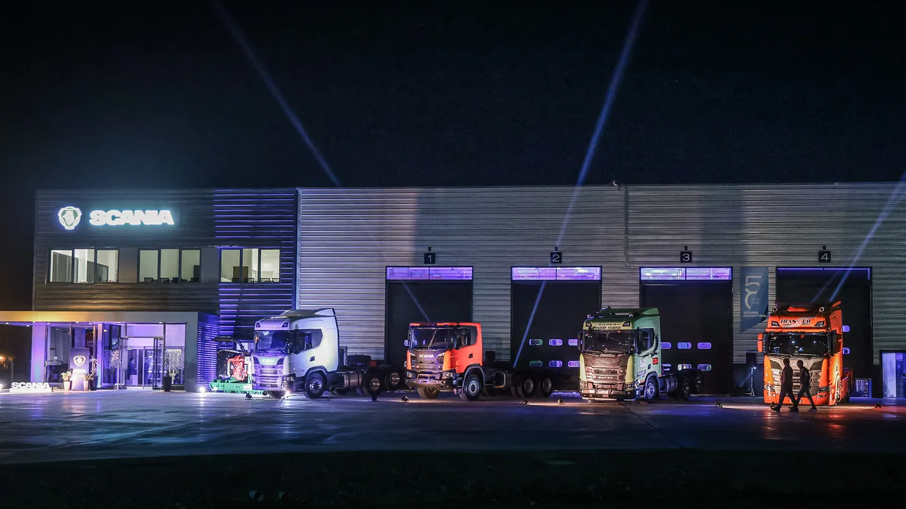

Scania Argentina difundió al comienzo de septiembre la ampliación de su punto de servicio en San Juan. Según el comunicado oficial, la inversión fue de USD 2,3 millones y permite triplicar la capacidad de trabajo. El establecimiento cuenta con 1.950 m² cubiertos, de los cuales 975 m² corresponden al taller y 175 m² al depósito de repuestos.
La empresa vincula el proyecto con las necesidades de Cuyo y la minería. También menciona atención dentro de las operaciones mediante Customer Workshop Services y un tratamiento de efluentes que permite reutilizar el 70% del agua destinada al lavado. Es una noticia de infraestructura de posventa: no un lanzamiento de camión ni una garantía de tiempos de reparación.
Por qué una ampliación puede importar tanto como un camión nuevo
Análisis de Zabala Repuestos. Para una empresa que trabaja con entregas comprometidas, la capacidad de servicio tiene valor cuando se traduce en menos horas improductivas. Comprar una unidad resuelve la necesidad de transporte; sostenerla operativa exige coordinar diagnóstico, repuestos, personal, herramientas y una ventana de ingreso.
Un edificio mayor puede facilitar esa coordinación, pero no alcanza por sí solo. Conviene preguntar cuántos turnos efectivos se ofrecen, qué trabajos se pueden realizar simultáneamente y cómo se priorizan los vehículos inmovilizados. La diferencia entre capacidad instalada y capacidad disponible es importante cuando varias flotas necesitan atención en la misma semana.
El repuesto correcto antes de desmontar
En una reparación programada, el primer paso útil suele ocurrir antes de que el camión entre al taller: identificar chasis, configuración, síntoma y antecedentes. Con esos datos es posible consultar disponibilidad de piezas y anticipar materiales complementarios, como juntas, fijaciones o fluidos que corresponden al procedimiento.
Más espacio de almacenamiento no demuestra que todas las referencias estén disponibles. Para el transportista interesa conocer el plazo de la pieza concreta, dónde se encuentra y qué ocurre si el diagnóstico revela un daño adicional. Una estimación por escrito permite organizar viajes, reemplazos y entregas sin depender de una promesa genérica.

Una lectura práctica para operaciones exigentes
En recorridos vinculados a una mina, la programación debe contemplar tanto la unidad como el acceso al lugar de trabajo. Un traslado al taller puede involucrar coordinación de personal, ventanas de operación y disponibilidad de otro vehículo. Por eso conviene evaluar qué tareas se pueden resolver en el sitio y cuáles necesitan equipamiento de una instalación fija.
La atención cercana no elimina las revisiones preventivas. Su mejor uso es complementar un plan basado en la aplicación real del camión y en los procedimientos del fabricante. No corresponde prolongar intervalos de servicio simplemente porque ahora hay un taller con mayor capacidad en la región.
Cómo medir si mejora la disponibilidad
Una flota puede llevar un registro sencillo de cinco momentos: aviso de la falla, confirmación del turno, ingreso, autorización del trabajo y entrega. Al separar esos tiempos resulta más fácil distinguir demora administrativa, espera de repuesto y tiempo técnico. Comparar solamente la fecha de ingreso con la de salida puede ocultar varios días anteriores.
Como ejemplo ilustrativo, una detención de dos días que se reduce a uno recupera un día de disponibilidad; no significa automáticamente un viaje facturado. El resultado depende de tener conductor, carga y programación. La mejora debe medirse en la operación concreta, no trasladarse sin más a una cifra de ahorro universal.
Preguntas útiles al solicitar un turno
- ¿El diagnóstico inicial y el trabajo completo requieren visitas diferentes?
- ¿Qué documentación y antecedentes necesitan antes del ingreso?
- ¿Las piezas presupuestadas están reservadas para esa unidad?
- ¿Quién autoriza cambios de alcance si aparece otra falla?
- ¿Qué controles se realizan antes de liberar el camión?
- ¿Qué información quedará asentada en el historial de mantenimiento?
Lo que todavía conviene confirmar
El anuncio de infraestructura no reemplaza la consulta comercial. Horarios, cobertura de atención en campo, precios, turnos y condiciones de los contratos deben confirmarse directamente con el prestador. Tampoco permite asegurar que cualquier reparación será más rápida: una pieza específica o un diagnóstico complejo pueden seguir definiendo el plazo.
Para el transporte argentino, la noticia pone el foco en algo concreto: el respaldo debe acompañar el lugar donde se trabaja. El valor final de esta ampliación se verá en la experiencia de las flotas, en la resolución de fallas y en la capacidad de planificar mantenimiento sin desordenar cada semana de viajes.